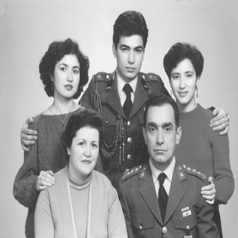
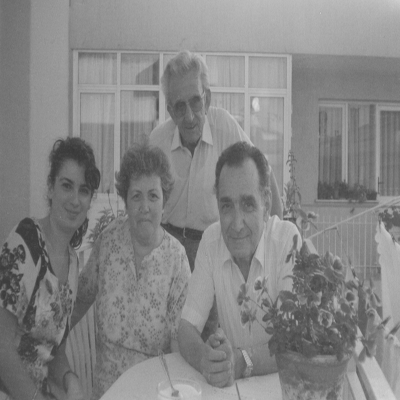

Yatılı okul boyunca bana sektirmeden her hafta mektup yazdı. Arkadaşlarımın mektupları nadiren ve üzerinde lan lun yazarak geldiği için benim zarflarda dört yıl boyunca yazan ve babamın Osmanlı, tarih, edebiyat, felsefe süzgecinden damlayan “Muhterem Ahmet Şerif İzgören” yazısı, Dubai Emiri veliahdı muamelesi görmeme neden oldu.
On dört yaşımdan itibaren ailemi artık yazları iki ay, sömestirde on beş gün görmeye başladım.
1981’de tayini Bursa’ya çıktı, biriktirdiği 100 bin lirayla aldığı Karşıyaka, Reşadiye’de 1749. sokaktaki eve taşındı annemler. “Kızım yalnız kalacağına ben yalnız kalayım” dedi. Çankırı ve Bursa’da bu bekârlık döneminde romanları Kopuş ve Beyefendi’yi yazdı. Daha sonra Anadolu’nun Kaybolan Masalları’nı yazdı.
İki yıl sonra tayini İzmir Maltepe Askerî Lisesi’ne çıktı. 1985’te omzunda daha fazla yer kalmadığı ve daha alt devre bir kurmay subay okul komutanı olarak atandığı için, ailedeki herkes karşı çıkmasına rağmen emekli oldu.

İzmir (Şubat 1985)
Yıllar akıp geçmiş, babamın üniformasını son giydiği gün, artık emekli olmuş. Bu, o yatağa yatıp ağladığı gün. Sedacık yeni doğmuş ziyarete gidiyoruz. Babamla beraber resmî üniformalı fotoğrafımızın olduğu tek gün. Benim neredeyse üniformalı fotoğrafım yok. Aslında bu kitap okurlarımın benim fotoğraflarımı gördükleri tek kitap. Ablam diş hekimi olarak Ege Üniversitesi’nden mezun oldu. İlk işi bir İranlı hekimle muayenehane açmak oldu. Şimdi iki kızıyla İzmir’de yaşıyor, bir diş hastanesinde çalışıyor. Sanem Ege Biyoloji’de öğrenci, saçlar “Nuni nufçik luft balon” şeklinde. Sanem torpilsiz, tanıdıksız Ege Üniversitesi, Su Ürünleri’nde öğretim üyesi. Cesur kardeşim yardımcı doçent falan herhâlde. Tatlı bir oğlu var, adı Erim. Erim, hem Altaylı hem de Beşiktaşlı. Ben üniformayı altı yıl daha giydim. Fotoğraf, Foto Anıt’ta çekilmiş. Babamın saçlar nasıl gür ve siyah değil mi? Hiç öyle albay saçı gibi değil.
Mesai sonrası eve geldi. “Ben emekli oldum” dedi. Bir daha hiç giyemeyeceği resmî elbiselerle doğruca küçük yatak odasına girdi, belki de yirmi yıllık olan o yatağa yüzüstü uzandı, yeşil örtünün üstünde hıçkıra hıçkıra ağladı. Yanına uzandım. Bu sefer, ilk defa ben onu teselli ettim.
Meslek hayatı boyunca neler yaptığını ancak şimdi yorumlayabiliyorum. Aklındakini hep çatır çatır söyledi. Ben hiç söylemedim mesela, hâlâ da söylemem. Bir hak savunulacaksa babam çıkıp savundu. Oysa askerlikte bunu yapamazsınız.
Hatırladığım, galiba Çankırı’da okul komutanı piyade veya topçu. Öğretmen subaylara “Öğretmenlik öyle yapılmaz bu şekilde yapılır” diyor. Herkes tırt olmuş, babam söz istiyor ve şunları söylüyor: “Komutanım, Nasreddin Hoca bir gün yüzerken boğulma tehlikesi geçiriyor, korkuyla altına kaçırıyor. Debelene debelene kurtuluyor, dönüp bir bakıyor ki büyük abtesti gölde yüzüyor. Duruyor ‘Benden çıktın, bana yüzme öğretiyorsun’ diyor.”
Bunun sonucu olarak, babamın meslek hayatı boyunca yedi tayin görmüşüz, tam on dokuz ev değiştirmişiz. Benim yaşıtım Kuleli öğrencilerinin tamamı hatırlar ve bilir. Coğrafya dersine giren bir adam vardı 10’luk kâğıt ver 3-4 alırsın. Herkese “Baban ne iş yapar?” diye sorar. Babası ayakkabıcı olana benim ayağım 41 numara, der, sömestirde teypler, viskiler, botlar gelir, sınıf geçilirdi. Herkes de bilirdi. Yirmi yıl Kuleli’de kaldı ve emekli oldu.
Şimdi düşünüyorum da bir evde yirmi yıl kalırsın da orası yuva olmaz. Böyle bir babayla on dokuz ev daha dolaşılırmış. Çünkü her taşınma yeni dersler, yeni arkadaşlar ve yeni maceralar demekti. Evde devamlı macera yaratan gezgin bir baba vardı. Kırık dökük eşyaların her tarafı yuva kokuyordu.

Reşadiye, İzmir (1995-1996)
Aradan yıllar geçmiş, saçlara aklar düşmüş. Yüzünde yine aynı sağlam, güvenilir gülümseme. Artık biraz daha yorgun ve daha az anlatan bir baba. Yine bizi sıkıştırmaya, öpmeye devam ediyor. Annem saçlarını hafif açık renk boyatmaya başlamış, cildi hâlâ süt içse dışarıdan fark edilecek kadar beyaz ve şeffaf. Arkada Osman Dayı. Hani at üstünden ve köfteciden tanıyorsunuz. Yıllarca Türkiye Zirai Donatım Kurumu’nda çalıştı. Bu yaşında Ankara’dan beyaz Şahiniyle kendi gelirdi İzmir’e. Eşi, Kadriye Yenge’yi de pek severdik. Osman Dayı ailenin gülüdür; çünkü iki taraftan koca sülalede cezaevine girmiş tek adam. Bunlar Balıkesir’deyken bir arkadaşı kız kaçırıyor, hop bunların eve. “Ne olur iki gün kalalım” diyorlar. Arkadaş bu. Ertesi gün jandarma geliyor, hop bunlar cezaevine. Yandaki kız herhâlde bir aile yakını.
Bu Reşadiye’deki evi babam tüm birikimleriyle 100 bin liraya aldı. O zaman “0” Renault 12 de 100 bin liraydı. Uzun süre evi mi alsak arabayı mı diye düşündüğünü hatırlıyorum. Karşıyaka’daki bu evde yaklaşık yirmi yıl oturduktan sonra sattılar. 1749, 13/10, Karşıyaka, İzmir. Şimdi Bostanlı’dalar. Ev gaz sobasıyla ısınıyordu; beşinci kat, asansör yok. Yine de çok severdik o evi.